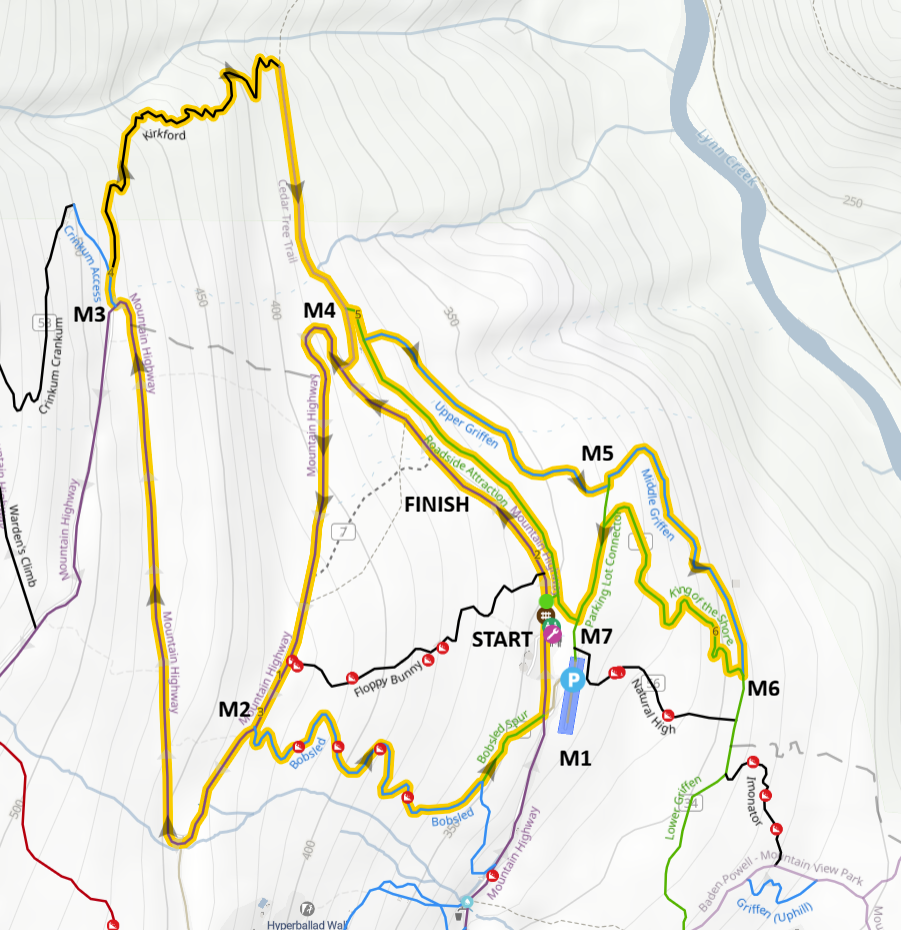

Race #3 – Fromme XC
Race #3 of the NSSSAA Mountain Bike League season takes place on Fromme.
- Date: Wednesday, April 22nd
- Location: Mt. Fromme
- Registration Location: Water Towers/Gate - Fromme
-
Parking:
- Mt. Fromme Parking Lot
- Coleman Street
- Please be aware of any parking restrictions in the area. No parking on Mountain Highway
Race Day Schedule
Riders can pre-ride the course anytime before registration.
| Time | Division |
|---|---|
| 3:00 | Registration |
| 3:30 PM | Junior (10s) Boys / Girls |
| 3:40 PM | Senior (11s/12s) Boys / Girls |
| 4:00 PM | Juvenile (9s) Boys / Girls |
| 4:10 PM | Bantam (8s) Boys / Girls |
Race Description
Riders will complete laps of the Upper Fromme trail network, starting and finishing near the Water Towers. The course will include a mix of technical and flowy sections, with some climbing and descending. Riders should be prepared for a challenging but fun course that showcases the best of Fromme’s trails.
Grade 10/11/12 Course Map
Marshal Information

Sign Up to MarshalWe are looking for course marshals to help support race day. Marshals help direct riders, support safe trail access, and assist with course signage.
Please arrive early to check in and collect your marshal package.
Races start at 3:30 PM.
What you’ll do:
- Help maintain safe trail access for public users
- Let trail users know a race is in progress
- Direct riders along the course
- Assist with course signage at the end of the race
What to bring:
- A bike to reach your marshal location
- A small pack for carrying signage
- Weather-appropriate clothing
- Phone - your number will be used for race day communication